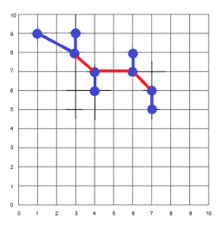

Biometria: Detekovanie dúhovky na obrázku. Úlohou je aplikovať na obrázky
metódy
lokalizácie objektov a vyhodnotiť úspešnosť oproti dostupným pravdivým hodnotám.

Biometria: Program, ktorý vo videu (z datasetu YoutubeFaces) detekuje ľudské
tváre.
Biometria: Program, ktorý dvom ľuďom z dvoch videí určí, či ide o rovnaké
alebo
rozdielne osoby (Rozhodne, či na dvoch videách je rovnaká/rozdielna osoba). Pomocou zhlukovacieho
algoritmu rozdelí ľudí na (napr.) 2 skupiny (mužy a ženy).
Strojové učenie a neurónové siete:
Program, ktorý bude predpovedať
hlasnosť (loudness) piesne. Trénovajú rôzne regresné modely (Bagging, Boosting, SVM). Použité
dáta
boli
zozbierané: Spotify
API
Bakalárska práca na tému: Didactická aplikácia pre výpočet Jordanovho tvaru
štvorcovej matice.
Predmet Webové technológie 1: Vytvorenie web stránky, ktorá obsahuje viacero
zvýraznených oblastí. Tieto oblasti sú aktívne. Pokiaľ sa myšou prejde nad aktívnu časť, tak sa zobrazia
informácie o danej oblasti.
Predmet Webové technológie 1: Vytvorenie web stránky, pomocou ktorej je
možné
odoslať
formulár na vopred nastavený mail s využitím Bootstrapu.
Predmet Webové technológie 1: Využitie Google Maps pre nájdenie najbližších
zástavok pri FEI STU BA. Taktiež zobrazenie vzdialenosti a dĺžky od zadaného miesta ku FEI STU BA.
(Vypršala skúšobná doba)
Predmet Webové technológie 1: Vytvorenie web stránky, s viacerými obrázkami,
ktoré
je možné premiestňovať. Dajú sa rozkliknúť a spustiť (stopnúť) v prezentácii. Selectuje sa na základe
popisu obrázkov. Stránka je doplnená o správu cookies.
Predmet paralelné programovanie a distribuované systémy:
- Oboznámenie sa s vláknami
- Mutex, multiplex, turniket, bariéra
- Producenti-konzumenti, čitatelia-zapisovatelia
- Večerajúci filozofi
- Fajčiari, divosi
- Barber
Predmet paralelné programovanie a distribuované systémy:
- Koprogramy
- Asynchrónne programovanie
Predmet paralelné programovanie a distribuované systémy:
- Programovanie na GPU: CUDA
- CUDA prúdy a udalosti
Algoritmy a dátové štruktúry:
Vytvoriť optimálny binárny vyhľadávací strom zo slovníka, pričom sa berie aj frekvencia jeho využívania.
Následne po zadaní slova program vyhodnotí, či sa slovo v slovníku nachádza a či má viac ako 5000
výskytov.
Algoritmy a dátové štruktúry:
Program opraví vstupný text podľa slovníka. Ak sa slovo v slovníku nenachádza, nahradí ho za
najvhodnejšie zo slovníka podľa algoritmov: editačná vzdialenosť/ najdlhšia spoločná podpostupnosť.
Algoritmy a dátové štruktúry:
2-SAT solver- program načíta súbor s logickou formulou v konjunktívnej normálnej forme a s polynomiálnou
zložitosťou zistí, či je vstupná formula ne/splniteľná (ak áno, priradí pravdivostné hodnoty).

Algoritmy a dátové štruktúry:
Pomocou algoritmov union-find a KDTree doplniť najkratšie hrany tak, aby sa z každého bodu bolo možné
dostať do každého.